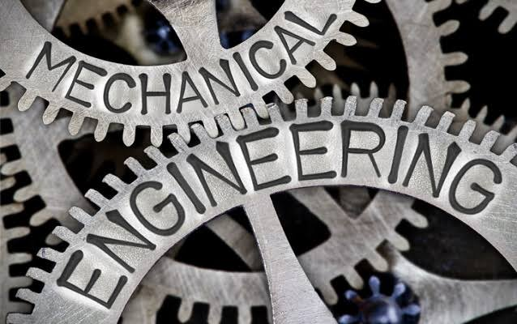

Introduction to Mechanical Engineering
Mechanical engineering is one of the oldest, broadest, and most versatile branches of engineering
iimtu.edu.in
. At its core, it is the discipline that applies the principles of physics, mathematics, and materials science to the design, analysis, manufacturing, and maintenance of mechanical systems
keninstitute.com
. From the simplest hand tools to complex spacecraft and smart manufacturing plants, mechanical engineers are responsible for making things move, generating power, and solving real-world physical problems.
Core Pillars of the Discipline
The field is built upon several foundational pillars that govern how energy, motion, and materials interact:
Thermodynamics: The study of heat, energy, and work transfer. It is essential for designing internal combustion engines, power plants, HVAC systems, and refrigeration
iimtu.edu.in
.
Fluid Mechanics: The analysis of how liquids and gases behave both at rest and in motion. This pillar is critical for aerodynamics, hydraulics, and pipeline design
iimtu.edu.in
.
Solid Mechanics and Materials Science: The study of how solid materials deform, withstand stress, and fail. This knowledge enables engineers to select the right materials and design durable, lightweight, and safe structures
www.quora.com
.
Kinematics and Dynamics: The study of motion and the forces that cause it. This forms the absolute basis for machinery, vehicle dynamics, and robotics
www.quora.com
.
Importance and Modern Applications
Mechanical engineering is often described as the "foundational pillar of all engineering disciplines" because its principles are embedded in almost every sector of modern society
iimtu.edu.in
. Key applications include:
Automotive and Aerospace: Designing safer, more aerodynamic, and fuel-efficient vehicles, drones, and aircraft.
Energy Systems: Developing both traditional power generation systems and next-generation renewable energy infrastructure, such as wind turbines and geothermal plants
iimtu.edu.in
.
Manufacturing and Automation: Designing the machinery and assembly lines that produce everything from consumer electronics to heavy industrial equipment.
Biomedical Engineering: Creating life-saving medical devices, artificial organs, prosthetics, and robotic surgical systems.
Emerging Trends (2025–2026 and Beyond)
As we progress through 2026, mechanical engineering is undergoing a transformative shift, often referred to as "Mechanical Engineering 2.0," driven by the convergence of physical systems and digital technology
online-engineering.case.edu
. Key trends shaping the future include:
Artificial Intelligence and Machine Learning: AI is revolutionizing the field through generative design (where algorithms optimize part geometry for maximum strength and minimum weight) and predictive maintenance, which uses real-time sensor data to anticipate equipment failures before they occur
www.researchgate.net
.
Additive Manufacturing (3D Printing): This technology is redefining production by enabling the creation of highly complex, lightweight components using sustainable or recycled metals, significantly reducing material waste and prototyping time
technical-partners.co.uk
.
Digital Twins: Engineers now create precise virtual replicas of physical systems. These digital twins allow for real-time simulation and performance optimization, drastically reducing the cost and risk of physical prototyping in sectors like automotive and energy
technical-partners.co.uk
.
Sustainable and Green Engineering: There is a massive global push toward net-zero emissions. This is driving innovation in biodegradable composites, energy-efficient machine design, and circular economy principles (designing products for easy repair and recycling)
www.researchgate.net
.
Advanced Robotics and Cobots: Collaborative robots (cobots) are increasingly working safely alongside humans on the factory floor, enhancing precision, productivity, and workplace safety
technical-partners.co.uk
.
Conclusion
Mechanical engineering remains a dynamic, essential, and future-proof discipline. It is no longer just about gears, levers, and engines; it is a highly interdisciplinary field at the forefront of the Fourth Industrial Revolution. By continuously integrating cutting-edge technologies like AI, advanced materials, and sustainable design practices, mechanical engineers are not just maintaining the modern world—they are actively inventing the next generation of global infrastructure, clean energy, and smart technology